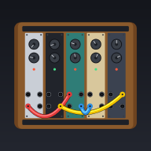

Instrument
Process / fugue inputs
Tap any demo to generate & play it.
Your saved pieces (up to 10). Stored on this device only.
Nothing saved yet — generate something and tap ★ Save.
Booting Python in your browser…

Generative MIDI — 100% in your browser, offline.
Tap any demo to generate & play it.
Your saved pieces (up to 10). Stored on this device only.
Nothing saved yet — generate something and tap ★ Save.
Booting Python in your browser…